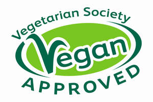

Trade Mark Journal No.2025/014 4 April 2025
UK00004176211 19 March 2025 (30)

- Class 30
- Coffee; tea; cocoa; hot chocolate; iced tea; artificial coffee; sugar; sugar substitutes; honey; treacle; flour and preparations made from cereals; preparations made from cereals for food for human consumption; breakfast cereals; muesli; granola; porridge; processed oats; porridge oats; bread; buns; baps; naan bread; pitta bread; flatbread; crackers; oatcakes; breadsticks; waffles; crepes; crumpets; bagels; bread rolls; biscuits; cookies; shortbread; cakes; tarts; fruit pies; non-dairy cheesecakes; pastries; doughnuts; muffins; brownies; fruit loaves; dessert puddings; non-dairy rice pudding; non-dairy meringue; jelly puddings; edible gold for decorating food and beverages; edible silver for decorating food and beverages; icing; crumb; wafers; syrup topping; non-medicated confectionery; sweets; boiled sweets; gum sweets; foamed sugar sweets; marshmallows; lollipops; licorice; pastilles; lozenges; Turkish delight; mint confectionary; chewing gum; non-dairy chocolate; non-dairy chocolate confectionary; non-dairy chocolate and fruit confectionary; non-dairy chocolate and nut confectionary; non-dairy chocolate sauces; non-dairy chocolate spread; non-dairy chocolate mousse; non-dairy chocolate beverages; non-dairy cooking chocolate; non-dairy chocolate chips; non-dairy chocolate drops; flapjacks; non-dairy chocolate flapjacks; cereal bars and energy bars; fruit bars; fruit chews; rice crisps; crisps made of cereals; popcorn; Indian snacks; Indian sweets; prepared meals consisting of nuts and fruit; edible dairy free ices; dairy free ice-cream; bubble tea; yeast, baking-powder; processed grains; modified starch; tapioca starch; essences for cooking; batter mixes; food flavourings; puff pastry; pastry dough; pastry mixes; stuffing mixes (foodstuffs); pancake mixes; konjac starch for food; Yorkshire puddings; seasonings; salt; pepper; mustard; vinegar; apple cider vinegar; sauces (condiments); prepared foodstuffs in the form of sauces; prepared foodstuffs in the form of pastes; prepared foodstuffs in the form of marinades; chutneys; imitation mayonnaise; imitation salad cream; salad dressing; vinaigrette; pesto; salsa; relishes; ketchup; spices; dried, processed or culinary herbs; tapioca and sago; sandwiches; quinoa; pre-prepared foods made including quinoa; pies and pasties, containing meat substitutes, poultry substitutes, fish substitutes, vegetables, fruits, processed nuts, egg substitutes or dairy product substitutes or any combination thereof; pasta and pasta products; pasta sauces; prepared, pre-prepared or pre-packaged pasta meals; prepared, pre-prepared or pre-pack pizzas; pizza sauces; prepared, pre-prepared or pre-packaged pizza meals; prepared, pre-prepared or pre-packaged meals made from pastry, rice, pasta or noodles; prepared, pre-prepared or pre-packaged meals containing principally of pastry, pasta, rice or noodles; risotto; prepared, pre-prepared or pre-packaged meals consisting principally of pastry, pasta, rice or noodles, and also including meat substitutes, poultry substitutes, fish substitutes, vegetables, fruits, processed nuts, egg substitutes or dairy product substitutes or any combination thereof; foodstuffs prepared in the form of meals consisting principally of pastry, pasta, rice or noodles, and also including meat substitutes, poultry substitutes, fish substitutes, vegetables, fruits, processed nuts, egg substitutes or dairy product substitutes or any combination thereof; nutritionally balanced low-calorie prepared meals consisting principally of pastry, pasta, rice or noodles, and also including meat substitutes, poultry substitutes, fish substitutes, vegetables, fruits, processed nuts, egg substitutes or dairy product substitutes or any combination thereof; prepared stir fry meals, made from or predominantly made from pasta, rice or noodles pasta, rice or noodles, and also including meat substitutes, poultry substitutes, fish substitutes, vegetables, fruits, processed nuts, egg substitutes or dairy product substitutes or any combination thereof; cereal based snack foods; rice based snack foods; pasta based snack foods; noodle based snack foods; but not including any such goods containing the flesh of meat, fish, shellfish, or fowl, or extracts derived from meat, fish, shellfish, or fowl, or meat and / or bone stock, or animal and / or carcass fats, or any other products or ingredients derived from animals, and all such goods being suitable for vegans.
The Vegetarian Society of the United Kingdom Limited
Representative: Baron Warren Redfern